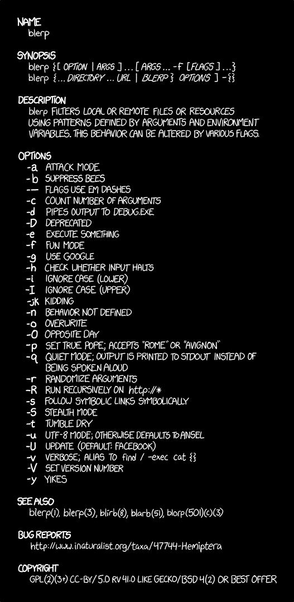

class: center middle # Catmandu - an introduction ## Patrick Hochstenbach, Carsten Klee & Johann Rolschewski ### ELAG 2018 07.05.2019 Berlin --- class: middle ## Agenda - Introduction - Catmandu::CLI - DSL - Catmandu::Fix - Catmandu::Fix::marc_map - Catmandu::Fix::Condition - Catmandu::Store & CQL - Reconciliation with Catmandu::Fix::getJSON - Catmandu install - Discussion --- class: middle ## Catmandu ... a data toolkit ... created 2012 by library professionals at the universities in Bielefeld, Ghent und Lund ... joined by developers from other institutions ... stable and growing international community with a dozen active submitters ... used by university, archives, libreries, museums and commercial implementers ... supports ETL processes to *extract* metadata records from various sources, *transform* them into new formats and *load* them into data stores --- class: middle ## Catmandu @ Bielefeld  --- class: middle ## Catmandu @ Ghent  --- class: middle ## Catmandu @ OpenRefine  --- class: middle ## Catmandu @ OpenRefine Harlow, Christina 2015. Data Munging Tools in Preparation for RDF: Catmandu and LODRefine. Code4Lib(30). Retrieved from http://journal.code4lib.org/articles/11013. --- class: middle ## Catmandu @ LinkedDataFragments  --- class: middle ## Catmandu @ LinkedDataFragments Verborgh, Ruben & Hochstenbach, Patrick 2015. Catmandu & Linked Data Fragments. ELAG Conference. Retrieved from http://www.slideshare.net/hochstenbach/elag2015. Klee, Carsten & Rolschewski, Johann 2018. Blend your data with Catmandu & Linked Data Fragments. ELAG Conference. Retrieved from http://jorol.de/talks/2018-ELAG. --- class: middle center # Core concepts --- class: middle ## Items ... are the basic unit of data processing in Catmandu. Items may be read, stored, and accessed in many forms. --- class: middle ## Importers ... are Catmandu packages to read items into an application. ... supports data imports from files and remote sources, like SRU or OAI-PMH endpoints. --- class: middle ## Fixes ... are a domain specific language (DSL) to enrich, filter and tranform items. --- class: middle ## Stores ... are databases and search engines to store/index your data. --- class: middle ## Exporters ... are Catmandu packages to export items from an application. --- class: middle ## Iterables Every stream of data is an iterator. With iterators the memory consumption of your program is low. You can process Gigabytes, Terabytes of input data without running out of memory. --- class: middle ## Importer/Exporter AlephSEQ BibTeX MAB2 MARC MODS PICA PNX RIS Atom CSV JSON RDF TXT TSV XLS(X) XML YAML --- class: middle ## Importer for APIs getJSON OAI-PMH SRU Z39.50 CrossRef ArXiv EuropePMC Twitter Wikidata --- class: middle ## Stores Aleph FedoraCommons CouchDB MongoDB Elasticsearch Solr CHI DBI LDAP --- class: middle ## CLI ``` $ catmandu COMMAND --OPTIONS $ catmandu help $ catmandu help COMMAND $ catmandu info $ perldoc Catmandu::Importer::MARC $ catmandu COMMAND IMPORTER to EXPORTER < INPUT > OUTPUT ``` --- class: middle ## convert ```csv vorname,anzahl,geschlecht,position Ali,29,m,1 Marie,27,w,2 Emma,27,w,1 ... ``` ``` $ catmandu convert CSV to JSON --line_delimited 1 < neukoelln.csv ``` --- class: middle ## convert ```xml ... <legalResp> <title>Mr</title> <firstName>Gareth</firstName> <lastName>Lambe</lastName> <position>Sales Operations Director</position> </legalResp> ... ``` ``` $ catmandu convert XML --path "//legalResp" to TSV \ --fix "collapse()" < eu-transparency-register.xml ``` --- class: middle ## convert ``` # convert binary MARC to human readable serialization $ catmandu convert MARC to MARC --type MARCMaker < perl_books.mrc # extract the title statement $ catmandu convert MARC to CSV \ --fix 'marc_map(245ab,dc_title,join:" ")' \ --fields dc_title < perl_books.mrc ``` --- class: middle ## convert ``` # convert MARC to breaker format $ catmandu convert MARC to Breaker --handler marc < perl_books.mrc \ > perl_books.breaker # create statistics $ catmandu breaker perl_books.breaker # save statistics as XLSX file $ catmandu breaker --as XLSX perl_books.breaker \ > perl_books_stats.xlsx ``` --- class: middle ## import/export ``` # transform data and store it in MongoDB $ catmandu import MARC --fix marc2dc.fix to MongoDB \ --database_name books < perl_books.mrc # query MongoDB $ catmandu export MongoDB --database_name books \ --query '{"dc_date": {"$gt":"2000"}}' to JSON ``` --- class: middle ## OAI ``` $ catmandu convert OAI --url http://pub.uni-bielefeld.de/oai \ to JSON ``` --- class: middle ## SRU ``` $ catmandu convert SRU --base http://services.dnb.de/sru/zdb \ --recordSchema oai_dc --parser simple --query "iss=1940-5758" \ to JSON --pretty 1 ``` --- class: middle ## JSON-API ``` $ catmandu import getJSON --from http://lobid.org/organisations/\ DE-1a.json to MongoDB --database_name organisations ``` --- class: middle ## JSON-API ```json {"isil":"DE-1"} {"isil":"DE-1a"} {"isil":"DE-1w"} ... ``` ``` $ catmandu import getJSON --url http://lobid.org/organisations/\ {isil}.json to MongoDB --database_name organisations < isil.jsonl ``` --- class: middle ## Wikidata ``` $ catmandu convert Wikidata --site enwiki --title "Larry Wall" to \ JSON --pretty 1 ``` --- class: middle ## config ``` $ cat catmandu.yml --- importer: marcxml: package: MARC options: type: XML fix: marc2dc.fix store: books: package: MongoDB options: database_name: books ... $ catmandu convert marcxml < perl_books.xml $ catmandu import marcxml to books < perl_books.mrc ``` --- class: middle ## Exercise 1 * Analyze and convert `neukoelln.csv` to different formats like JSON, XLSX & YAML. * Extract the column `geschlecht` from `neukoelln.xlsx` and count the different genders. * Extract the legal representatives `legalResp` from the EU transparency register `eu-transparency-register.xml` and flatten the data structure. * Create a (sub-)field statistic for the MARC collection `perl_books.mrc` and save it as XLSX file. * Query the ZDB SRU interface (http://services.dnb.de/sru/zdb?operation=explain&version=1.1) for the ISSN '1940-5758'. * Get all libraries of Berlin via the lobid-organisation (http://lobid.org) JSON API. --- class: middle ## Catmandu::Fix ... a small __domain specific language__ (DSL) for manipulation of data ... consists of: * **paths** to refer to particular parts of an item * **functions** to manipulate (parts of) an item * **conditionals** to control when to apply which fix functions * **binds** to manipulate the execution of fix functions --- class: middle ## Nested Data Structures ```json { "key" : "value" "list" : [ "value1", "value2", "value3" ], "object" : { "key" : "value" "list" : [ "value1", "value2", "value3" ], "object" : { "key" : "value" } } } ``` --- class: middle ## Nested Data Structures ```json { "preferredName" : "Larry Wall", "surname" : "Wall", "forename" : "Larry", "describedBy" : { "valid" : "2016-04-14T11:19:01+0200", "license" : "http://creativecommons.org/publicdomain/zero/1.0/legalcode", "id" : "http://hub.culturegraph.org/entityfacts/138937079" }, "dateOfBirth" : "1954", "professionOrOccupation" : [ { "id" : "http://d-nb.info/gnd/4139395-8", "value" : "Informatiker" } ], "depiction" : { "image" : "https://commons.wikimedia.org/wiki/Special:FilePath/...", "thumbnail" : "https://commons.wikimedia.org/wiki/Special:FilePath/...", "url" : "https://commons.wikimedia.org/wiki/..." } } ``` --- class: middle ## Paths ... to reference data within deep nested data structures ... uses "**dot notation**" ``` path | value --------------------------------|--------------------------------- surname | "Wall" describedBy.id | "http://d-nb.info/gnd/4139395-8" professionOrOccupation.0.value | "Informatiker" ``` --- class: middle ## Paths ... to add data to deep nested data structures ``` add_field(foo.bar.0.baz.1.qux,quux) ``` ```json { "foo" : { "bar" : [ { "baz" : [ null, {"qux" : "quux"} ] } ] } } ``` --- class: middle ## Paths ``` $append - Add a new item at the end of an array $prepend - Add a new item at the start of an array $first - Syntactic sugar for index '0' (the head of the array) $last - Syntactic sugar for index '-1' (the tail of the array) * - Wildcard for all array elements ``` ``` # {} add_field(dc_contributor.$append,"Wall, Larry") # { "dc_contributor" : [ "Wall, Larry" ] } add_field(dc_contributor.$prepend,"Randal L. Schwartz") # { "dc_contributor" : [ "Randal L. Schwartz", "Wall, Larry" ] } set_field(dc_contributor.$last,"Tom Phoenix") # { "dc_contributor" : [ "Randal L. Schwartz", "Tom Phoenix" ] } remove_field(dc_contributor.*) # {"dc_contributor" : []} ``` --- class: middle ## Fix functions - field ``` # {} add_field(name,'Christiansen, Tom') # { "name" : "Christiansen, Tom" } set_field(name,'Wall, Larry') # { "name" : "Wall, Larry" } copy_field(name,dc.creator) # { "name" : "Wall, Larry", "dc" : { "creator" : "Wall, Larry" } } remove_field(name) # { "dc" : { "creator" : "Wall, Larry" } } move_field(dc.creator,dc_creator) # { "dc" : {}, "dc_creator" : "Wall, Larry" } retain_field(dc_creator) # { "dc_creator" : "Wall, Larry" } ``` ``` # { "subjects" : "Perl,R,JavaScript,Perl,R" } split_field(subjects,',') sort_field(subjects) uniq(subjects) # { "subjects" : ["JavaScript", "Perl", "R"] } join_field(subjects,'; ') # { "subjects" : "JavasSript; Perl; R" } ``` --- class: middle ## Fix functions - string ``` # { "name" : "Wall" } upcase(name); # { "name" : "WALL" } downcase(name); # { "name" : "wall" } capitalize(name); # { "name" : "Wall" } append(name,', Larry'); # { "name" : "Wall, Larry" } prepend(name,', Dr. '); # { "name" : "Dr. Wall, Larry" } ``` --- class: middle ## Fix functions - string ``` # { "name" : " Christiansen, " } trim(name); # { "name" : "Christiansen," } trim(name,'nonword'); # { "name" : "Christiansen" } substring(name, 0, 1); # { "name" : "C" } ``` ``` # { "format" : "MARC21"} replace_all(format, '\d', '') # { "format" : "MARC"} # { "id" : [ "123-4", "567-X" ] } replace_all(id.*, '-[0-9xX]$', '') # { "id" : [ "123", "567" ] } ``` --- class: middle ## Fix functions - numbers ``` # { "numbers" : [ 1, 2, 3 ] } copy_field(numbers,count) count(count) copy_field(numbers,sum) sum(sum) copy_field(numbers,mean) stat_mean(mean) copy_field(numbers,variance) stat_variance(variance) # { "numbers" : [ 1, 2, 3 ], "count" : 3, "sum" : 6, # "mean" : 2, "variance" : 0.67 } ``` --- class: middle ## Fix functions - identifier ``` # { "issn" : "1553667x" } issn(issn) # { "issn" : "1553-667X" } # { "isbn" : "1565922573" } isbn13(isbn) # { "isbn" : "978-1-56592-257-0" } # { } uuid(id) # { "id" : "4162F712-1DD2-11B2-B17E-C09EFE1DC403" } ``` --- class: middle ## Fix functions - dictionaries ``` $ cat languages.csv eng,English enm,English, Middle (1100-1500) epo,Esperanto esk,Eskimo languages est,Estonian ... ``` ``` # { "dc_language": "eng" } lookup(dc_language,languages.csv,default:English) # or lookup(dc_language,languages.csv,delete:1) # { "dc_language": "English" } ``` ``` # large dictionaries in stores lookup_in_store('ddc', 'MongoDB', -database_name => 'ddc') ``` --- class: middle ## Fix functions - external sources ``` # passes JSON object to an external process over stdin # and reads a JSON object from it's stdout cmd("jq -c -M {title}") # fetch data from a JSON API get_json("http://example.com/json", path: path.key) # geocode address geocode('Johannisstraße 2, 10117 Berlin') # Add all author values to a MongoDB database. add_to_store(authors.*, MongoDB, database_name: catalog, bag: authors) # logging log('not a valid ISSN' , level:Warning); ``` --- class: middle ## MARC ```json { "_id": "216300223", "record": [ [ "LDR", " ", " ", "_", "06911nam a2201177 c 4500" ], [ "001", " ", " ", "_", "216300223" ], [ "245", "0", "0", "a", "Programming Perl", "b", "[covers Perl 5]" ] } ``` --- class: middle ## Catmandu::Fix::marc_* ```no-highlight marc_map(FIELD[IND1IND2]SUBFIELD+/POSITION-POSITION, \ MAPPING, OPTIONS) ``` --- class: middle ## marc_map - field ``` marc_map(001,dc_identifier) # {"dc_identifier":"022361960"} ``` --- class: middle ## marc_map - part of field ``` marc_map(008/35-37,dc_language) # {"dc_language":"eng"} ``` --- class: middle ## marc_map - indicator ```no-highlight marc_map('024[8,0]a',dc_identifier) # {"dc_identifier":"BVBTBV042038872"} ``` --- class: middle ## marc_map - subfields and options ``` marc_map(245ab,dc_title,join:' ') # {"dc_title":"Perl and XML [XML processing with Perl]"} marc_map(245ab,dc_title,split:1) # {"dc_title":["Perl and XML","[XML processing with Perl]"]} marc_map(245ba,dc_title,split:1,pluck:1) # {"dc_title":["[XML processing with Perl]","Perl and XML"]} ``` --- class: middle ## marc_map - repeatable fields ``` marc_map(650a,dc_subject.$append) # {"dc_subject":[ "Perl","Perl 5","Programmierung","XML"]} ``` --- class: middle ## marc_map - repeatable subfields ``` marc_map(6500,authority_control_number,split:1) # {"authority_control_number":["(DE-601)245463658","(DE-588)4506116-6",\ # "(DE-601)123519713","(DE-588)4307836-9","(DE-601)105599522","(DE-588)4144277-5"]} marc_map(6500,authority_control_number,split:1,nested_arrays:1) # {"authority_control_number":[["(DE-601)245463658","(DE-588)4506116-6"],\ # ["(DE-601)123519713", "(DE-588)4307836-9"],\ # ["(DE-601)105599522","(DE-588)4144277-5"]]} ``` --- class: middle ## Catmandu::Fix::marc_* ``` marc_map(999,has.f999,value:'yes ok') marc_add(900,a,test,b,test2) marc_add(900,a,$.my.field) marc_set(001,5678) marc_remove(600) marc_remove(245a) marc_replace_all(245a,Title,'Hello!') marc_append(245,'.') ... ``` --- class: middle ## Catmandu::Fix::marc_* documentation http://librecat.org/assets/catmandu_cheat_sheet.pdf https://github.com/LibreCat/Catmandu-MARC/wiki/Mapping-rules https://metacpan.org/pod/distribution/Catmandu-MARC/lib/Catmandu/MARC/Tutorial.pod http://librecat.org/Catmandu/#example-fix-script --- class: middle ## Conditions ``` if exists(ddc) lookup(ddc,'dict.csv') end ``` --- class: middle ## Conditions ``` if any_match(ddc,'004') set_field(subject,'Data processing, Computer science ') else set_field(subject,'Miscellaneous') end ``` --- class: middle ## Conditions ``` if is_uri(uri_field) get_json(uri_field,path:path.key) end ``` --- class: middle ## Conditions ``` # select only items conforming to a schema select valid(record,JSONSchema,schema:'schema.json') # reject all english MARC records reject marc_match(008/35-37,'eng') ``` --- class: middle ## validate, add_to_exporter & variables ``` validate(.,MARC) if exists(errors) copy_field(_id,errors.$append) add_to_exporter(errors,JSON,line_delimited:1,\ file:{{filename}}.jsonl) add_to_exporter(.,MARC,type:MARCMaker,\ file:{{filename}}.mrk) reject() end ``` ``` $ catmandu convert -v MARC to Null --var filename=non_valid \ --fix validate.fix < perl_books.mrc ``` --- class: middle ## Fix documentation http://librecat.org/Catmandu/#path http://librecat.org/Catmandu/#fixes-cheat-sheet http://librecat.org/assets/catmandu_cheat_sheet.pdf --- class: middle ## Exercise 2 * Analyze the dataset `libraries.json` and extract all library names and ISIL using the JSONPath dot notation. * Analyze internal data structure of MARC records in Catmandu. Extract the tag of the 6th field and the value of the 1th subfield. * Extract all titles (MARC 245, non repeatable) from the collection `perl_books.mrc`. * Extract all personal names (MARC 700, repeatable) from the collection `perl_books.mrc` and count them. * Extract the language codes from the MARC collection `perl_books.mrc` and look them up in the dictionary `dict_languages.csv`. * Select records which conform the default MARC schema. * Export non valid records and their error messages. --- class: middle ## Catmandu::Store Namespace for packages that can make data persistent Supported stores: https://metacpan.org/search?q=Catmandu%3A%3AStore --- class: middle ## Import ``` $ catmandu import JSON to MongoDB --database_name 'libraries' \ < libraries.json ``` --- class: middle ## Export ``` $ catmandu export MongoDB --database_name 'libraries' to YAML $ catmandu export MongoDB --database_name 'libraries' \ to TSV --fix 'collapse(sep:"-")' ``` --- class: middle ## Query ``` $ catmandu export MongoDB --database_name 'libraries' \ --query '{"id" : "node/775814877"}' to YAML $ catmandu xport MongoDB --database_name 'libraries' \ --query '{"properties.addr:city" : "Berlin"}' to YAML ``` --- class: middle ## Count ``` $ catmandu count MongoDB --database_name 'libraries' $ catmandu count MongoDB --database_name 'libraries' \ --query '{"properties.wheelchair" : "yes"}' ``` --- class: middle ## CQL Contextual/Common Query Language ... a formal language for representing queries to information retrieval systems ``` title any "dinosaur bird dinobird" title exact "the complete dinosaur" dinosaur and bird or dinobird publicationYear < 1980 ``` <small>https://www.loc.gov/standards/sru/cql/</small> --- class: middle ## Catmandu & CQL ... some importer and stores support CQL * Catmandu::Importer::Z3950 * Catmandu::Importer::SRU * Catmandu::Store::ElasticSearch * Catmandu::Store::MongoDB * Catmandu::Store::Solr --- class: middle ## CQL configuration ```yaml --- store: cql: package: MongoDB options: database_name: perl_books bags: data: cql_mapping: default_index: all indexes: author: op: 'any': true 'all': true '=': true 'exact': true field: 'dc_contributor' year: op: 'any': true 'all': true '=': true '>': true '<': true 'exact': true field: 'dc_date' ... ``` --- class: middle ## CQL commands ``` $ catmandu export -v cql --cql-query 'author any \ "Christiansen Wall"' to YAML $ catmandu export -v cql --cql-query 'year > 2000' to YAML ``` --- class: middle ## Exercise 3 * Convert the MARC collection `perl_books.mrc` to Dublin Core with the fix `marc2dc.fix`. * Convert the MARC collection `perl_books.mrc` to Dublin Core with the fix `marc2dc.fix` and import it to MongoDB. * Export all books published before 2000. * Export all books written by 'Wall, Larry'. * Make an CQL query for all books written by `Christiansen`. * Make an CQL query for all books published after `2000` * Make an CQL query for all books belongs to DDC class `005` --- class: middle ## Reconcile & blend your data Reconciliation is identifying multiple representations of the same real-world object. - Dostoyevsky - Dostoevskij - Dostojevskij - Dostoievski Who is the real Jan Jansen? - Jansen, Jan - Jansen, Jan - Jansen, Jan --- class: middle ## VIAF  .left[<small>https://viaf.org/ </small>] --- class: middle ## VIAF API ```json { "query": "tolstoi, leo", "result": [ { "term": "Tolstoï, Léon, 1828-1910", "displayForm": "Tolstoï, Léon, 1828-1910", "nametype": "personal", "bav": "adv11685784", "bnf": "11926775", "dnb": "11864291x", "lc": "n79068416", "nla": "000036180076", "viafid": "96987389", "score": "55134", "recordID": "96987389" }, ... ] } ``` .left[<small>https://platform.worldcat.org/api-explorer/apis/VIAF </small>] .left[<small>https://viaf.org/viaf/AutoSuggest?query=Tolstoi%2C%20Leo</small>] --- class: middle ## Catmandu getJSON() ``` if exists(dc_contributor) # iterate over all contributor values do list(path:dc_contributor,var:current) # a lookup.query variable saves the current name copy_field(current,lookup.query) # make the request to JSON API and store results \ in lookup.viaf variable get_json("http://viaf.org/viaf/AutoSuggest?query={query}",\ path:lookup.viaf,vars:lookup) if exists(lookup.viaf.result.0) # check if we got a satisfying score if greater_than(lookup.viaf.result.0.score,1000) # prepend base URL to VIAF ID prepend(lookup.viaf.result.0.viafid,\ 'https://viaf.org/viaf/') # append VIAF URI to a new dct_contributor field copy_field(lookup.viaf.result.0.viafid,\ dct_contributor.$append) end end # delete temporary lookup variable remove_field(lookup) end end ``` --- class: middle ## Catmandu getJSON() ```json { "dc_contributor" : [ "Tolstoi, Leo" ], "dct_contributor" : [ "https://viaf.org/viaf/96987389" ], ... } ``` --- class: middle ## Excercise 4 * Create a new Fix script `lookup_viaf.fix` to match `dc_contributor` names against the VIAF API. * Run this fix in combination with the `marc2dc.fix` and check the new element `dct_contributor` --- class: middle ## Catmandu install --- class: middle ## Unix - install dependencies ``` $ sudo apt install build-essential git libexpat1-dev libgdbm-dev \ libssl-dev libwrap0-dev libxml2-dev libxslt1-dev libyaz-dev \ perl-doc zlib1g zlib1g-dev ``` --- class: middle ## Unix - install local Perl ``` $ \curl -L https://install.perlbrew.pl | bash $ nano ~/.bashrc ... source ~/perl5/perlbrew/etc/bashrc ... $ perlbrew init $ perlbrew install perl-5.28.1 $ perlbrew switch perl-5.28.1 $ perlbrew install-cpanm ``` --- class: middle ## Windows - install Perl Strawberry Perl http://strawberryperl.com/ ``` msiexec.exe /i "C:\Download\strawberry-perl-5.28.1.1-64bit.msi" ``` --- class: middle ## Install/Update Catmandu Core: ``` $ cpanm Catmandu ``` Modules: ``` Catmandu::AlephX Catmandu::Breaker Catmandu::DBI \ Catmandu::Exporter::Table Catmandu::Identifier \ Catmandu::Importer::getJSON Catmandu::MARC Catmandu::OAI \ Catmandu::RDF Catmandu::SRU Catmandu::Stat \ Catmandu::Store::ElasticSearch Catmandu::Store::MongoDB \ Catmandu::Validator::JSONSchema Catmandu::XLS Catmandu::XML\ Catmandu::Z3950 ``` For more modules see [metacpan.org](https://metacpan.org/). --- class: middle ## Catmandu modules ``` ├── Catmandu │ ├── Cmd │ │ └── foo.pm │ ├── Exporter │ │ ├── Foo.pm │ ├── Fix │ │ ├── foo_map.pm │ ├── Importer │ │ ├── Foo.pm │ ├── Store │ │ ├── Foo │ │ │ ├── Bag.pm │ │ │ └── Searcher.pm │ │ ├── Foo.pm ``` --- class: middle ## Questions & Discussion --- class: middle ## Links Website: http://librecat.org Documentation: http://librecat.org/Catmandu Blog: https://librecatproject.wordpress.com Mailing list: librecat-dev@librecat.org CPAN: http://metacpan.org/release/Catmandu Github: http://github.com/LibreCat/Catmandu --- class: middle center  .left[<small>Comic by [Randall Munroe](http://xkcd.com/1692/), [CC BY-NC 2.5](https://creativecommons.org/licenses/by-nc/2.5/) </small>]